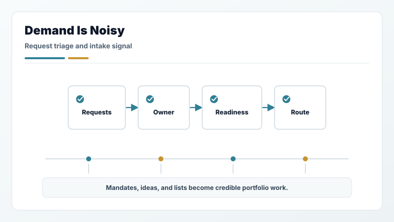
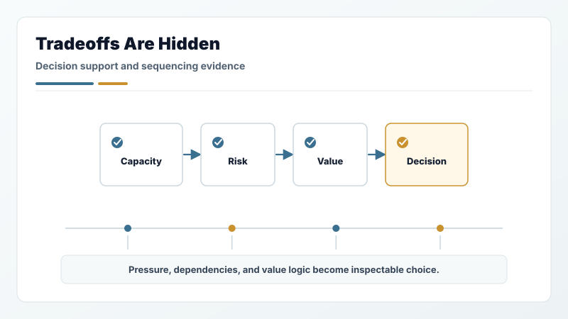
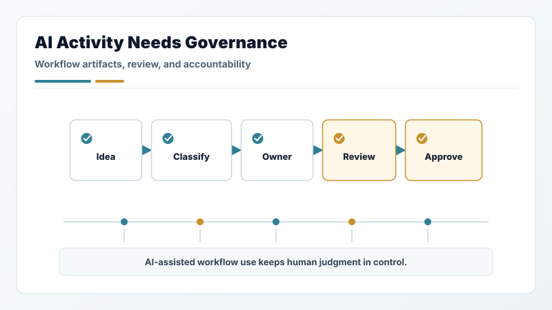
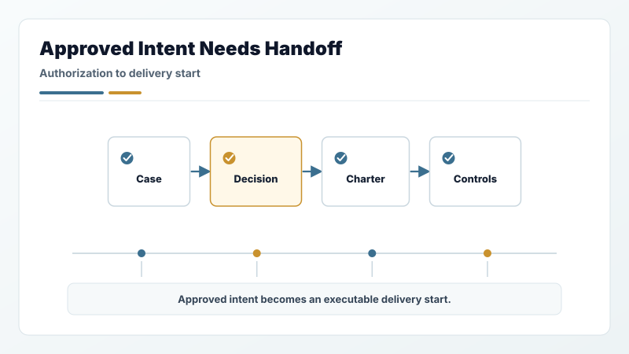
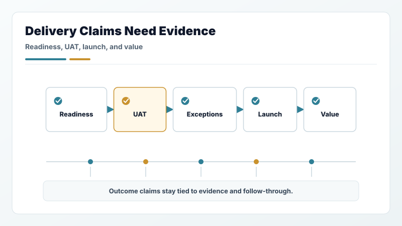
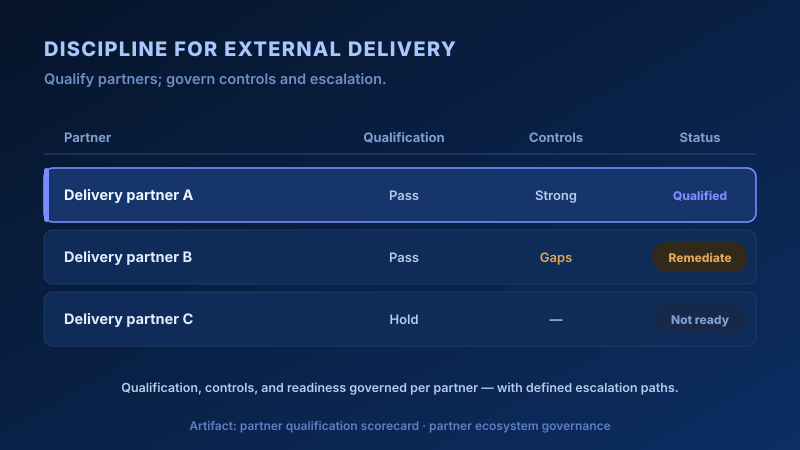
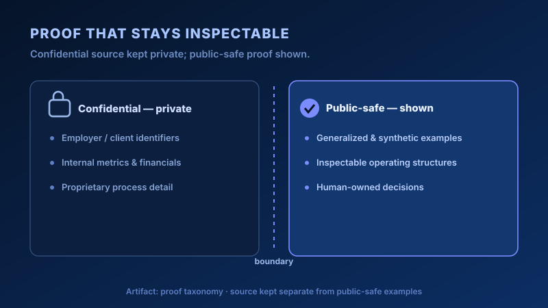
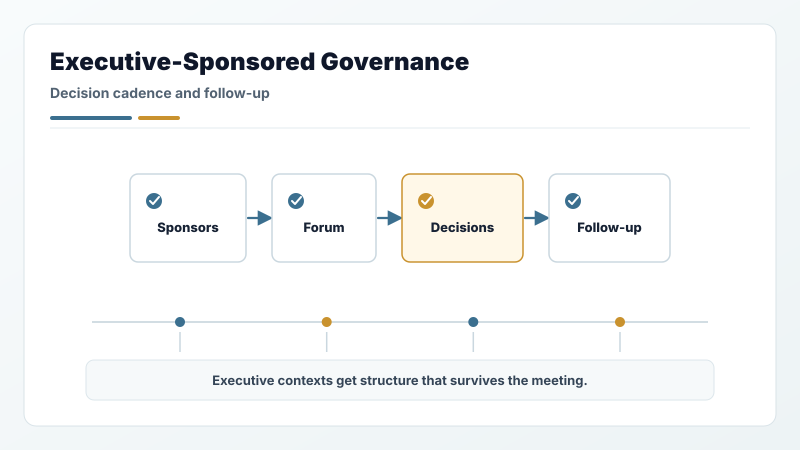
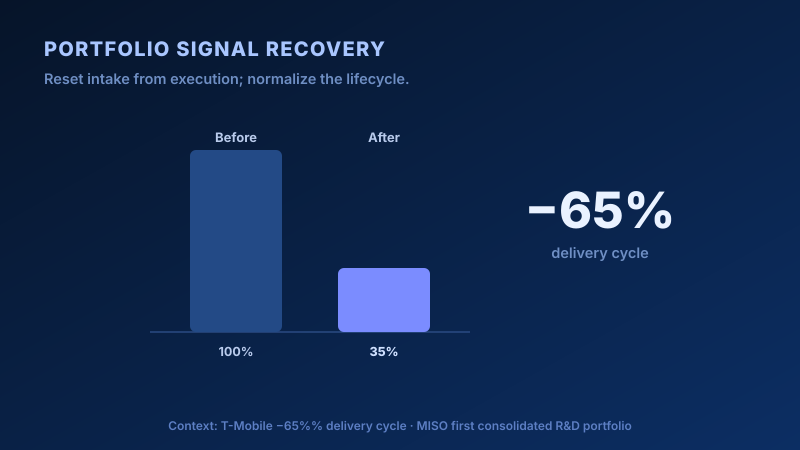
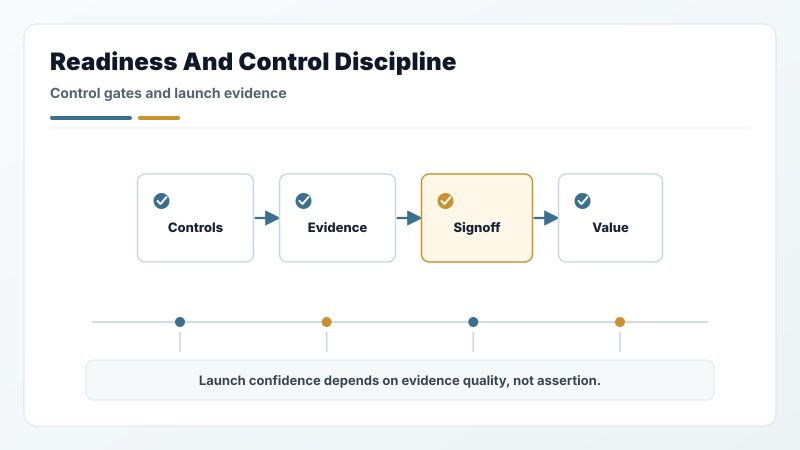

Demand is noisy
Requests, mandates, ideas, and initiative lists need ownership, routing, lifecycle state, readiness checks, and sponsor clarity before they become credible portfolio work.
Executive portfolio
A focused view of the PMO, portfolio governance, executive operations, and AI-enabled workflow problems I am built to solve.
Role fit
I am strongest where leadership needs cleaner signal, stronger ownership, executive-ready decisions, and disciplined follow-through across complex portfolios or programs.
The surfaced work currently runs through AI-powered knowledge workflows, so the visible AI scope is workflow governance: intake, value proof, artifact lifecycle, reliance classification, owner accountability, human review gates, and evidence quality. That qualifies the AI portion of my work while keeping the broader role fit centered on PMO, portfolio governance, and program operations.
Executive read
I build the operating layer that helps leaders see demand clearly, compare tradeoffs honestly, fund and sequence work responsibly, govern AI-assisted workflow use with human accountability, and keep delivery evidence tied to value realization.
Director / Principal PMO, EPMO, PPMO, portfolio governance, program operations, executive operations, and Chief-of-Staff-adjacent roles centered on cadence, visibility, decision support, governance, and follow-through.
Operating problems

Requests, mandates, ideas, and initiative lists need ownership, routing, lifecycle state, readiness checks, and sponsor clarity before they become credible portfolio work.

Leaders need capacity pressure, dependencies, risk, value logic, prioritization evidence, and decision asks packaged in a way that supports actual choice.

AI-enabled workflow ideas and artifacts need business-value review, reliance classification, owner accountability, human review gates, approval boundaries, and evidence standards. This is workflow governance, not model or platform ownership.

Business cases, charters, assumptions, decision records, risks, scope, owners, and delivery controls need a repeatable path from authorization to execution.

Readiness, UAT, blockers, exceptions, controls, launch criteria, signoffs, benefits, and value confidence need to stay visible through decision and follow-through.

Partners, suppliers, and external delivery networks need qualification logic, readiness evidence, escalation paths, operating cadence, controls, and outcome accountability.

Claims, assumptions, examples, and generated outputs need clear review paths so portfolio evidence remains credible and easy to inspect.
Experience evidence
The module examples are generalized or synthetic; the experience layer is real and named. Ten case studies across Microsoft, T-Mobile, Avalara, Doosan GridTech, and MISO Energy cover the operating problem, the structure put in place, and what changed — spanning enterprise software, revenue technology, energy infrastructure, SaaS growth, finance operations, partner ecosystems, regulatory remediation, and technical R&D.

CTO, CIO, CFO, COO, senior finance, product, partner, delivery, and compliance contexts where decisions needed clearer structure and durable follow-up.

Portfolio resets across large initiative sets, separating intake from execution and normalizing lifecycle states, owners, readiness, capacity, and sequencing.

Finance-critical releases, supplier remediation, revenue-sensitive delivery, and value realization routines where evidence quality mattered before accepting launch or outcome claims.
Next sections
The portfolio page answers the first executive question. Experience evidence and proof boundaries carry the credibility load; operating routes and workflow modules show how the work is structured.